Contents
Kernel Average Misorientation (KAM)
The kernel average misorientation (kam) is a measure of local grain misorientation that is usually derived from EBSD data. For formaly defining the KAM we denote by 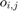 the orientations at pixel position  and by 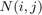 the set of all neighboring pixels. Then the kernel average misorientation 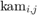 at pixel position is defined as
and by 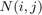 the set of all neighboring pixels. Then the kernel average misorientation 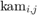 at pixel position is defined as
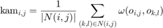
Here 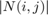 denotes the number of all neighboring pixels taking into account and 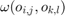 the disorientation angle between the orientation 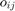 in the center and the neighbouring orientation 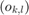. The specific choice of the set of neighboring pixels is crucial for the compution of the KAM. Most commonly the following additional constrains are made
- consider neighbors up to order 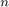, e.g. 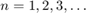
- consider only neighbors belonging to the same grain
- consider only neighbors with a misorientation angle smaller than a threshold angle 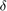
In the case of sqaure and hexagonal grids the order of neighbors is illustrated below
plotSquareNeighbours nextAxis plotHexNeighbours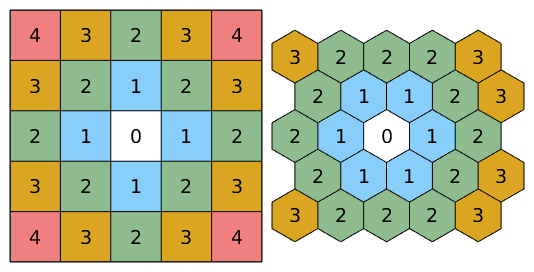
A Deformed Ferrite Specimen
Let us demonstrate the computation of the KAM at the example of a deformed Ferrite specimen. Lets import the data first and reconstruct the grain structure
mtexdata ferrite [grains,ebsd.grainId] = calcGrains(ebsd('indexed')); % remove one pixel grains ebsd(grains(grains.grainSize <= 1)) = []; [grains,ebsd.grainId] = calcGrains(ebsd('indexed')); grains = smooth(grains); plot(ebsd,ebsd.orientations) hold on plot(grains.boundary,'lineWidth',2) hold off
ebsd = EBSD (<a href="matlab:docmethods(ebsd)">show methods</a>, <a href="matlab:plot(ebsd)">plot</a>)
Phase Orientations Mineral Color Symmetry Crystal reference frame
0 63044 (100%) Ferrite LightSkyBlue 432
Properties: ci, fit, iq, sem_signal, x, y
Scan unit : um
I'm going to colorize the orientation data with the
standard MTEX ipf colorkey. To view the colorkey do:
ipfKey = ipfColorKey(ori_variable_name)
plot(ipfKey)
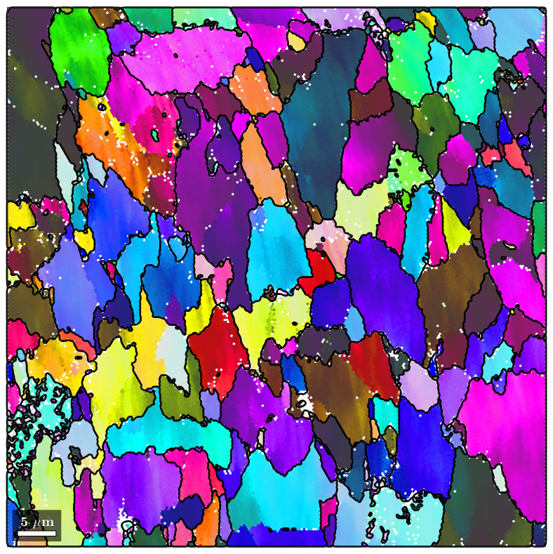 The kernel average misorientation is computed by the command kam.
kam = ebsd.KAM; % lets plot it plot(ebsd,kam) mtexColorbar hold on plot(grains.boundary,'lineWidth',2) hold off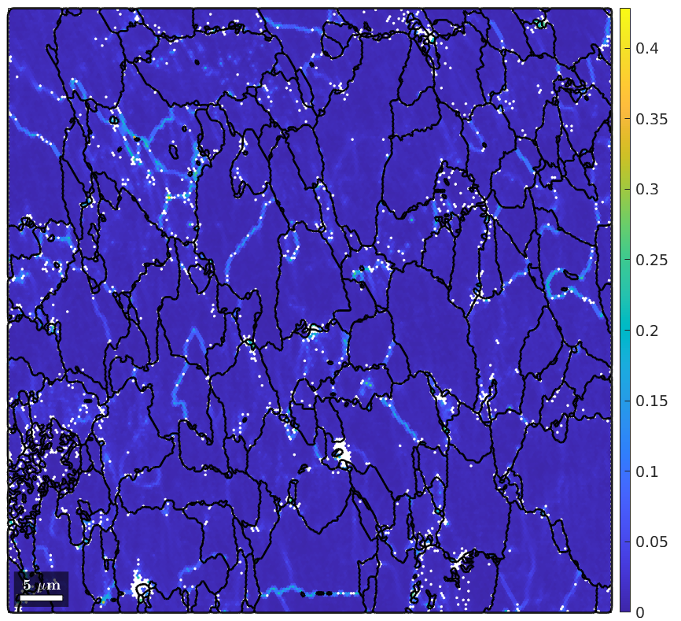
When computed with default parameters in MTEX neighbors up to order 1 are considered and no threshold angle is applied. If grains have been reconstructed and the property ebsd.grainId has been set (as we did above) only misorientations within the same grain are considered. As a consequence the resulting KAM map is dominated by the orientation gradients at the subgrain boundaries. ()
Specifying a reasonable small theshold angle 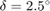 the subgrain boundaries can be effectively removed from the KAM.
plot(ebsd,ebsd.KAM('threshold',2.5*degree)) mtexColorbar hold on plot(grains.boundary,'lineWidth',2) hold off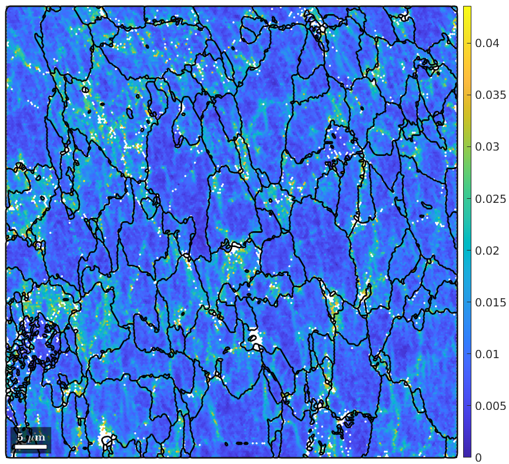
Unfortunately, the remaining KAM becomes very sensitve to measurement errors and is often very noisy. The noise can be reduced by considering heigher order neighbors
plot(ebsd,ebsd.KAM('threshold',2.5*degree,'order',5)) mtexColorbar hold on plot(grains.boundary,'lineWidth',2) hold off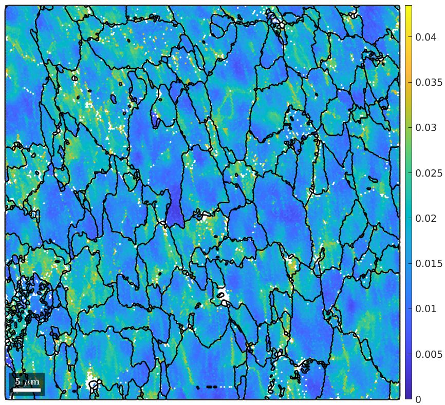
Although this reduced noise it also smoothes away local dislocation structures. A much more effective way to reduce the effect of measurement errors to the kernel average misorientation is to denoise the EBSD map first and compute than the KAM from the first order neighbors.
% chose a denoising filter F = halfQuadraticFilter; F.alpha = 0.5; % denoise the orientation map ebsdS = smooth(ebsd,F,'fill',grains); % plot the first order KAM plot(ebsdS,ebsdS.KAM('threshold',2.5*degree)) hold on plot(grains.boundary,'lineWidth',2) hold off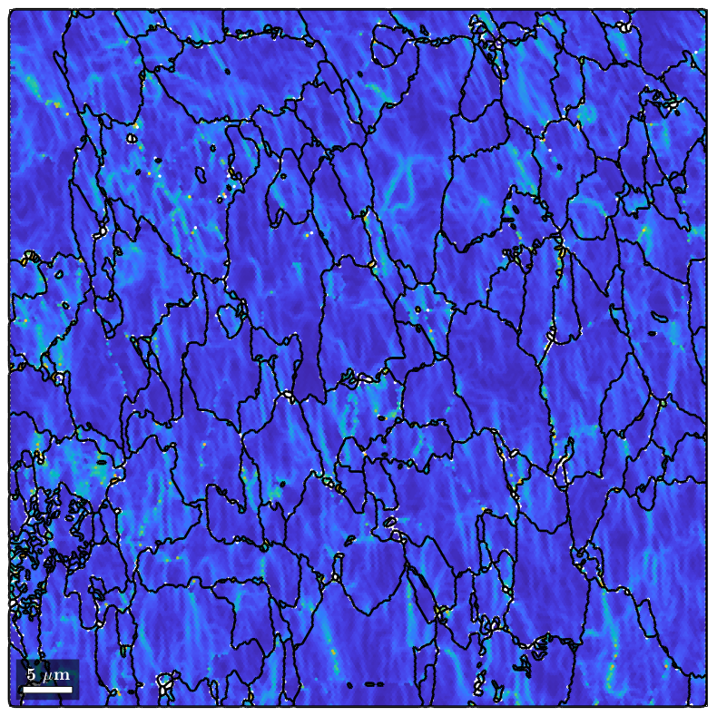
We observe that the KAM is not longer related to subgrain boundaries and nicely revalves local dislocation structures of the deformed material.
function plotSquareNeighbours N = [4 3 2 3 4;... 3 2 1 2 3;... 2 1 0 1 2;... 3 2 1 2 3;... 4 3 2 3 4]; cs = crystalSymmetry; ebsd = EBSDsquare(rotation.nan(5,5),N,0:4,{cs,cs,cs,cs,cs},[10 10]); plot(ebsd,'EdgeColor','black','micronbar','off','figSize','small') legend off text(ebsd,N) end function plotHexNeighbours N = [3 2 2 2 3;... 2 1 1 2 3;... 2 1 0 1 2;... 2 1 1 2 3;... 3 2 2 2 3]; cs = crystalSymmetry; ebsd = EBSDhex(rotation.nan(5,5),N,0:4,{cs,cs,cs,cs,cs},10,1,1); plot(ebsd,'edgecolor','k','micronbar','off','figSize','small') legend off text(ebsd,N) axis off end